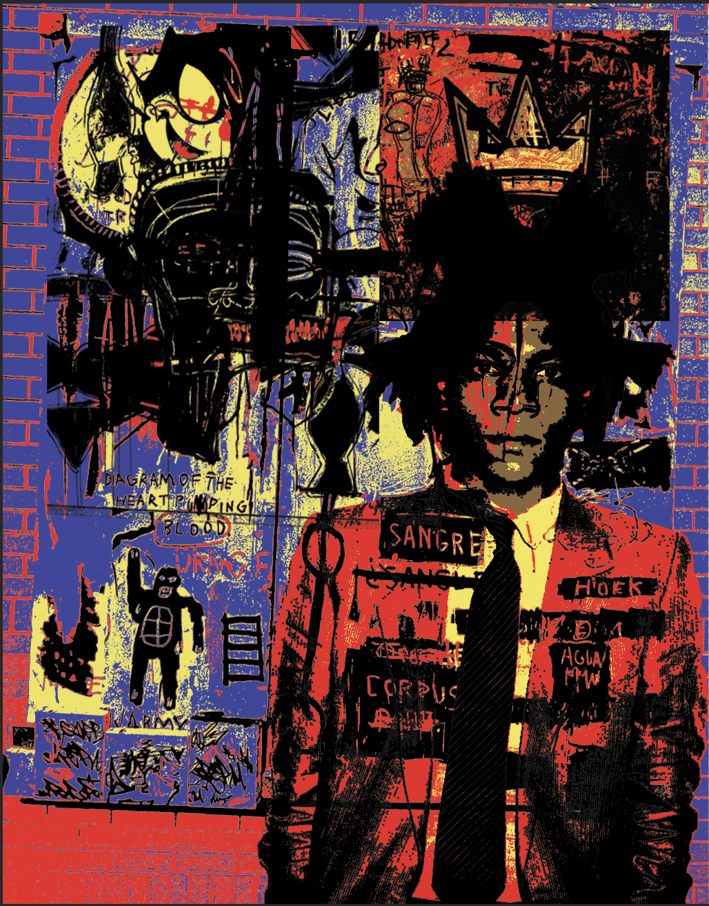
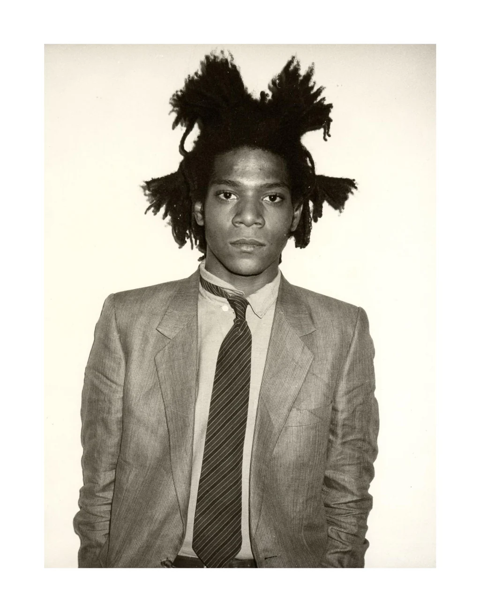
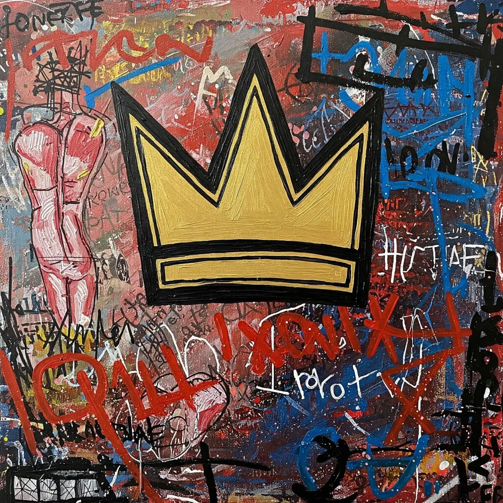
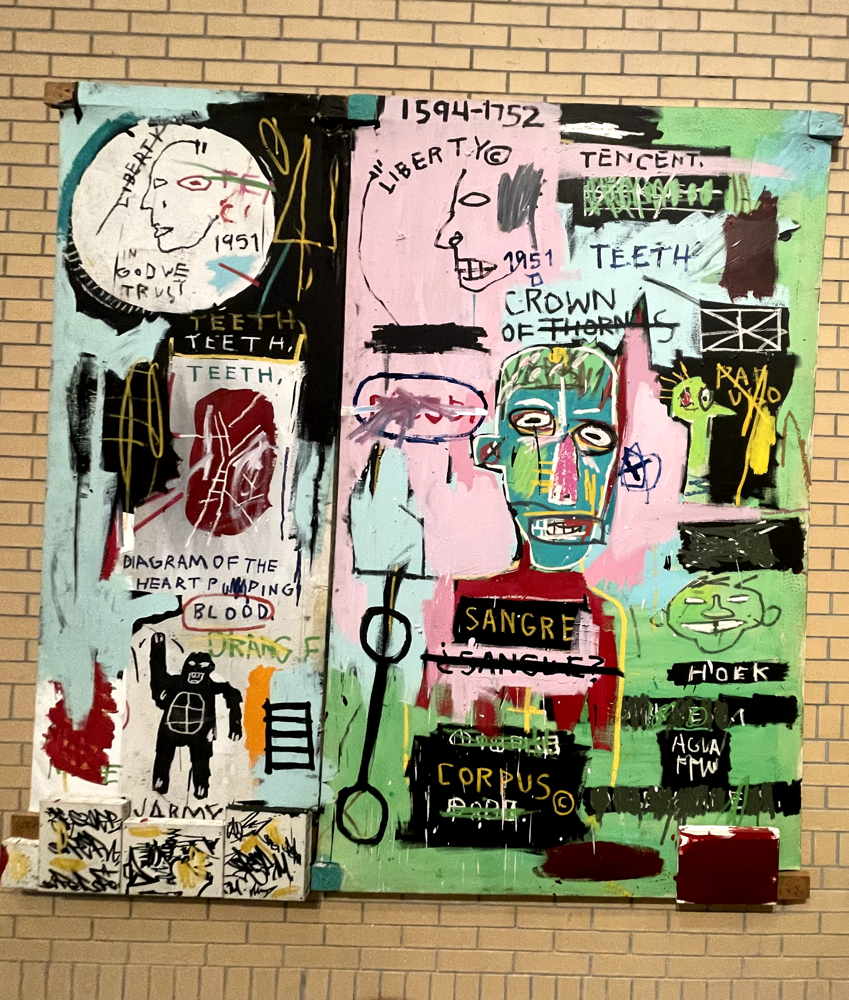
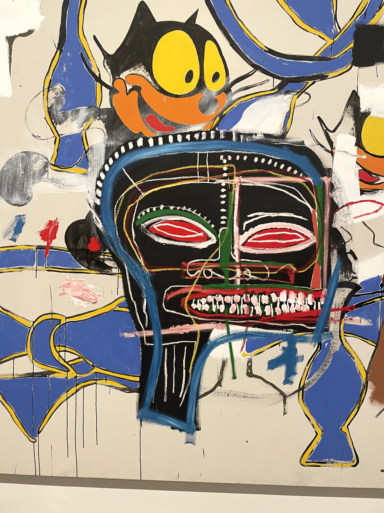

Silk Screen Press
This would have to be my favorite piece of work that I've done thus far through all the art courses I have taken these past semesters. For this project, we had to design a T-shirt using the silk screen process. The silk screen is all about bold, solid shapes so you can't really do fine details with it, so you have to think in layers. We were told to pick a favorite thing that actually means something to us. I chose the famous artist Jean-Michel Basquiat. I went to an art exhibit for the first time ever, and it was a showcase of some of his original pieces. That experience stuck with me. So for this assignment, I took photos I had personally captured of his artwork along with an image of himself and another piece of art work of his and used them to create a brand new piece kind of a collage style homage to a legend.